같은 밤을 네 구간으로 나눠, 다섯 자리가 각각 무슨 말을 하는지 나란히 놓았다.
낮에 찍었다. 시각은 실제 밤과 다르다 — 목표 취침·밤 시작을 오후로 옮겨 각 구간을 만들었고, 그래서 «지금 자면» 기상이 밤 11시대로 나온다. 구간 판정과 문구 골격은 밤과 같다.
| 구간 | 조건 | 무엇을 세나 |
|---|---|---|
| 활동 | activeHours — 안 누웠고 기상~밤 시작 사이 | 목표 취침까지 |
| 목표 전 | beforeBedtime — 밤은 시작됐고 목표 취침 전 | 목표 취침까지 |
| 목표 지남 | 위 어디에도 안 걸리는 나머지 | 목표보다 얼마나 늦었나 |
| 누운 뒤 | sleepStartedTonight != null && alarm != null | 지금까지 잔 시간 |
판정 순서는 누운 뒤 → 활동 → 목표 전 → 목표 지남 이다. 누운 뒤가 맨 앞이라 활동 시간에 취침을 눌러도 누운 뒤로 간다.
| 활동밤 시작을 18:00 으로 밀어 만듦 | 목표 전밤 시작 15:00 · 목표 취침 22:45 | 목표 지남오늘만 목표 취침 15:26 | 누운 뒤14:36에 누움 · 알람 21:51 | |
|---|---|---|---|---|
| 나우바 미리보기잠금화면 알약 |
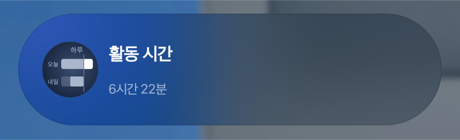 활동 시간 / 남은 시간 |
취침까지 / 남은 시간 |
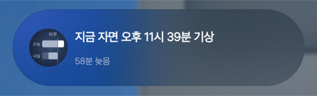 지금 자면 몇 시 기상 / 늦은 시간 |
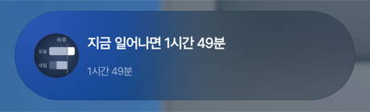 지금 일어나면 몇 분 / 잔 시간 |
| 나우바 펼침알약을 누르면 |
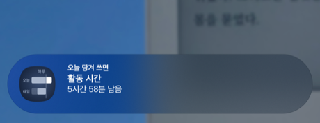 활동 시간엔 버튼이 없다 — 의도한 것 |
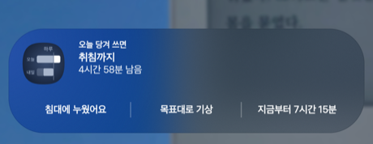 버튼 셋 — 침대에 누웠어요 · 목표대로 · 지금부터 |
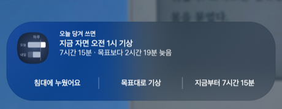 버튼 셋은 목표 전과 같다 |
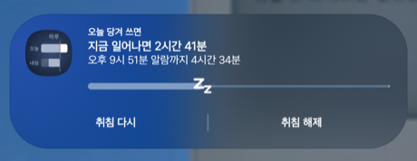 진행바 + 취침 다시 · 취침 해제 |
| 상단바칩 |
뛰는 사람 · 6시간 16분 |
침대 · 6시간 16분 — 숫자가 활동과 같다 |
느낌표 · 2시간 18분 |
Zz · 1시간 48분 |
| 상단바 펼침알림창 |
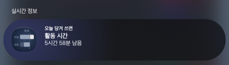 «실시간 정보» 묶음 맨 위. 나우바 펼침과 같은 내용 |
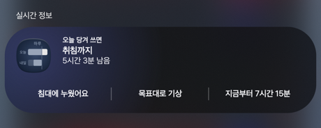 나우바 펼침과 같은 카드가 넓게 펼쳐진다 |
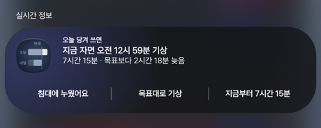 늦은 밤에는 이름 자리에 기상 시각이 온다 |
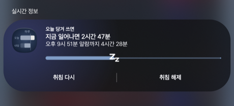 진행바가 목표 수면을 채운다 |
| 앱 화면전체 | 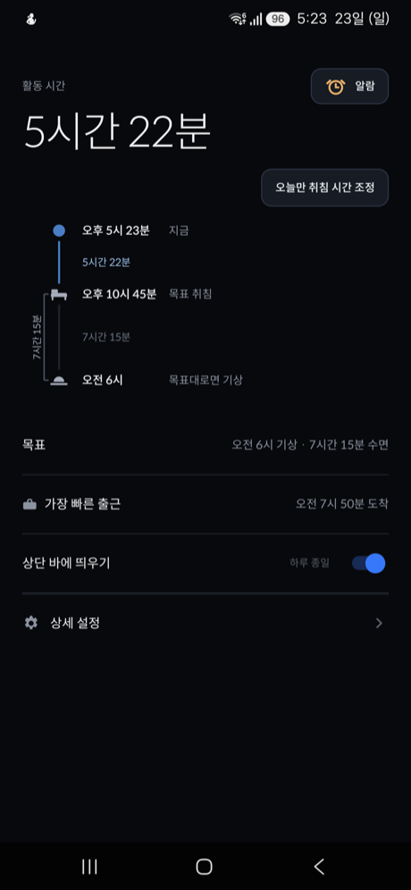 취침 버튼도 준비 버튼도 없다 |
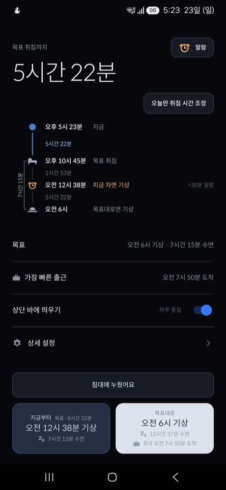 «가장 빠른 출근» 줄과 목표대로 버튼에만 도착이 붙었다 |
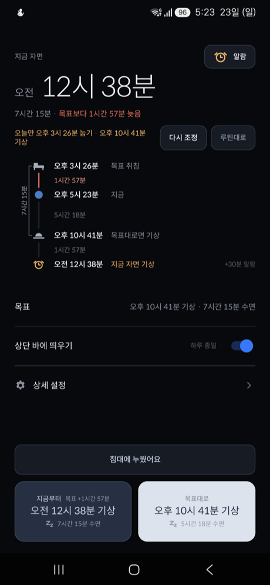 둘 다 회사 도착 없음 — 새벽 1시대 도착 |
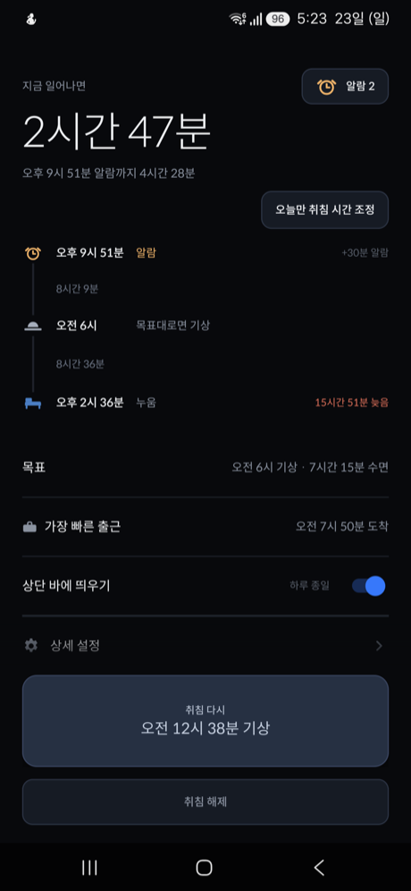 취침 다시 · 취침 해제 폭이 맞았다 |
setSubText)과
본문에 같은 값이 들어가 네 구간 모두 같은 문장이 두 번 찍혔다. subText 를 뺐다. 접힌
알약은 제목과 칩만 쓰기 때문에 알약은 그대로다. 세는 두 구간의 작은 줄도
«몇 시간 몇 분 남음» 으로 맞췄다.도착 시각은 세 값에서 나온다 — 목표 기상 + 준비 시간 + 회사까지. 그 결과를 «가장 빠른 출근» 으로 설정 안에도 얹어, 숫자를 만지면 결과가 바로 보인다. 목표 기상 06:00 에 준비 30분과 출근길 1시간 20분을 더하면 07:50 이다.
출근 시각은 도착 계산에 안 들어간다. 늦는지 알려줄 때만 쓴다 — 도착이 그 시각보다 늦으면 얼마나 늦는지 앱 화면에 한 줄이 뜬다.
찍는 법: 구간마다 shared_prefs 를 갈아 끼우고 앱을 다시 띄운 뒤
앱 화면 → 홈(상단바) → 알림창 → 잠금(나우바) → 알약 탭(펼침) 순으로 screencap.
나우바 알약을 펼치는 자리는 uiautomator 로 잡은 nowbar_icon 좌표다.
{kind=link}
{kind=link}
{kind=link}
{kind=link}
{kind=link}
{kind=link}
{kind=link}
{kind=link}
{kind=link}
{kind=link}
{kind=link}
{kind=link}
{kind=link}
{kind=link}
{kind=link}
{kind=link}
{kind=link}
{kind=link}
{kind=link}
{kind=link}
{kind=link}